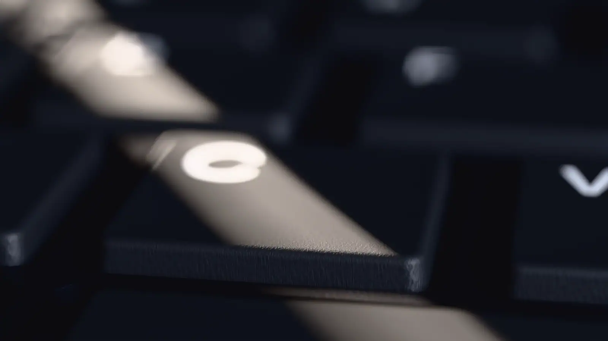

Clak
Your Mac and iPhone, each other's keyboard.
It starts with a key.
Typed on your Mac.
No cable. No cloud. No account.
Lands on your iPhone.
Your Mac and iPhone,
each other's keyboard.
Try it. Type anything.
Both ways, in your browser
Type on your iPhone, iPad, or Apple TV with your Mac's keyboard. Or flip it around and drive your Mac from the couch. Bluetooth in both directions, no dongles.
Start typing. The iPhone just sees a Bluetooth keyboard, so it needs no app.
Build from source
git clone https://github.com/sryo/clak
cd clak && xcodegen generate
open Clak.xcodeprojTwo targets: Clak for the Mac (macOS 14+) and Clak Remote for the phone (iOS 17+). Clak needs Input Monitoring on first launch, then it starts advertising on its own. Pair from the receiving device's Bluetooth settings.
Just want the phone side? Get Clak Remote on the App Store.
Shortcuts
| Paste clipboard to device | ⌘⇧V |
|---|---|
| Toggle keystroke forwarding | ⌘⇧K |
| Toggle global forwarding | ⌘⇧G |
| Disconnect and reconnect | ⌘⇧D |
| Previous / play-pause / next | F7F8F9 |
| Mute / volume down / up | F10F11F12 |
Questions
Does the other device need an app?
No. Clak advertises as a standard Bluetooth keyboard, so an iPhone, iPad, Apple TV, or anything else that pairs with a keyboard just sees a keyboard. Clak Remote is an app only because a phone can't be a keyboard without one.
How is this different from Universal Control?
Continuity needs both devices on the same iCloud account and doesn't reach an Apple TV, a work phone, or a field that blocks pasting. Clak types, so it gets through anywhere a keyboard would, including the Mac login screen.
Does my keyboard layout survive?
Yes. Clak reads your active macOS layout and maps each character to the HID codes that produce it, dead keys included. Accents and ñ come out right.
Can I still use my Mac while it forwards?
Forwarding is on only while the HUD has focus. ⌘⇧G flips it to global, which sends every keystroke to the device no matter what's in front. ⌘⇧K turns forwarding off entirely.
Clak Remote doesn't show up on my Mac.
If the Mac is signed into the same iCloud as the phone, macOS already knows the phone and may not list it as a new keyboard. The bootstrap script in the README installs a small background helper that makes macOS discover it whenever it isn't picking it up.
What does the trackpad support?
One finger moves with pointer acceleration, a tap clicks, two fingers scroll with fling momentum, and a two-finger tap is a right click. On the phone, turn on AssistiveTouch to get a cursor in the other direction. iPads already have one.
Is it free?
Yes, free to use. The source is on GitHub.